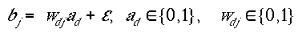
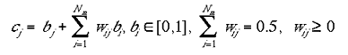
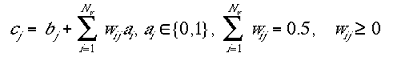
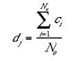
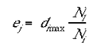
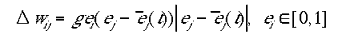
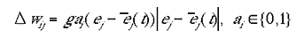
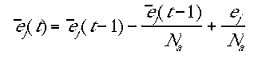
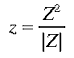
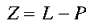

|
|  | 1 |
where wdj is the connection weight from a point in the model input layer to a point in the model non-granular layer. In the results described in this paper the number of mini-columns at each retinotopic location in the non-granular layer was set to 100. An amount of white noise, , was added at this stage. The modelling results proved robust to a wide range of noise values (0 <= max <= 0.5). The visuotopic projection of the granular layers was modelled after the tree shrew, and approximated as an undistorted mapping of the hemi-retina.
The indirect connections, wij, were initially set to low values drawn from a uniform random distribution. Equation 2a shows the contribution from indirect connections in the case where type I were used:
|  | 2a |
where Nm is the number of mini-columns in the non-granular layer. Equation 2b shows the contribution indirect connections in the case where type II were used:
|  | 2b |
where Nv is number of discrete visuotopic locations in the input layer.
The excitatory-centre and inhibitory- surrounds were not modelled explicitly as local patterns of connection, for reasons of computational efficiency. The excitatory-centre was implemented by simply averaging the activities of each cell with its immediate neighbours:
|  | 3 |
where Ne is the number of ci s within the excitatory radius. It the present modelling the excitatory radius was set to 7 mini-columns. The inhibitory- surround was implemented in the following fashion: the number of mini-columns, within the inhibitory radius, with activity lower than the jth cell was divided by the total number of columns within the inhibitory radius. The resulting quotient was then multiplied by the activity of the mini-column with the highest activation within the inhibitory radius.
|  | 4 |
where Nl is the number of di's within the inhibitory radius that satisfy the condition di>dj and Ni is the total number di's within the inhibitory radius. dimax is the mini-column which had the maximum activation within that dj's inhibitory radius. The inhibitory radius was also set to 7 mini-columns in the results reported here. A number of different methods for calculating the Mexican-hat field were trialed with little effect on the substantive results reported here. Varying the excitatory and inhibitory radii had the effect of changing the spatial frequency of the singularities in the orientation preference map.
The learning rule was a simple variant of Hebbian learning, an approximation of the learning rule described by Phillips and Singer (1998). The indirect connections were strengthened only when a site was active due to the direct, retinotopic projections. The learning rule for the two types of input maps are given in equations 5a and 5b for type I and type II indirect inputs respectively.
|  | 5a |
|  | 5b |
were g was a constant affecting the learning rate. g could be varied over a broad range of values (0.000003 <= g <= 0.0001) without any substantive effect on the modelling results. (t) was a rolling average for the jth minicolumn at time t, approximated by:
|  | 6 |
where Na is the number of time steps over which the rolling average was calculated. In the present results Na was set to 50. Again, this parameter could be varied over a large range (20-1000) without effecting the substantive results.
The sum of the indirect weights to a given mini-column was periodically scaled to a constant during the simulation (see equations 2a and 2b). This was assumed to reflect some optimal metabolic load for the number of synapses on each neuron. Without this regular scaling, the magnitudes of activity were more uneven, but the maps of orientation preference were qualitatively indistinguishable from the runs which included the weight normalisation.
The orientation preference map was produced in a manner similar to animal studies. During the data collection phase, a series of 16 oriented lines were swept across the model retina, and the resultant activations in each mini-column summed as vectors. The orientation of each vector is the orientation of the bar and the magnitude of the vector is the activation of the mini-column. The orientation preference map is the orientation of the vector sum at each mini-column. The magnitude map is the magnitude of the vector sum at each mini-column.
Modelling orientation preference in the Tree Shrew
The presentation of a line to the model retina is shown in figure 3a. An example of the model cortex, activated by a bar, is also shown in figure 3a. Results of the modelling using the type I indirect connectivity are shown in figure 3b. The simulation was run for 20,000 time- steps or 400 sweeps of the stimulus bar.
The orientation preference map shows singularities, saddle-points and linear zones and has the same qualitative flavour as orientation preference maps from the tree shrew, macaque, cat or ferret primary visual cortex. The maps were essentially indistinguishable in relation to which method was used to model the indirect-input connections (c.f. figure 5). Figure 3c is a map of the low magnitude regions, with orientation preferences superimposed. The result also reflects animal data: lower magnitude regions are largely a function of high rates of change of orientation preference (Blasdel, 1992). The figure shows only singularities and fractures as having a low magnitude vector sum.
Figure 4 shows the connection pattern of a subset of the type I indirect connections in the non-granular layers. The projections terminate in patchy regions which have the same orientation preference as the site of injection. In addition, the pattern of patchy connections is elongated so that it coincides with the retinotopic projection of a line of that orientation . If tracer is injected into a large area of the model non-granular layers a pattern of connectivity is seen which is similar to that seen in the macaque and squirrel monkey (Rockland and Lund 1983). For example, an injection covering the central field of vision (out to a radius of one quarter of the entire hemi- retina) shows dense uptake of tracer around the site of injection except for the characteristic lacunae or holes in the tracer uptake (data not shown). At further distances from the site of injection, the tracer uptake becomes more patchy, but the connections from the fovea extend to the furthest reaches of the visual field.
Modelling orientation preference with type II indirect input connections
Figure 5 shows modelling results for type II indirect input connectivity. In this experiment both moving blobs and bars were used during training. The map of orientation preference is qualitatively the same as for the type I indirect inputs, although higher resolution maps could be produced due to the smaller number of connections. The figure also shows the projection pattern from the foveal region of the input layer to the non-granular layer. The fovea (taken here as a semi-circle with a radius of a quarter of the entire hemi-retina) projects in a patchy fashion to all regions in the non-granular layer. In other words, portions of every pinwheel of orientation preference contain indirect inputs which arise from the fovea. There is a systematic pattern of orientation preference at the sites these indirect foveal projections. In the foveal region of the global map, these indirect foveal projections tend to coincide with the singularties. In the parafovea, the orientation preference at the sites of these indirect foveal projections changes depending on the polar retinotopic angle. Indirect projections from either the parafovea, or upper- or lower-half of the visual field show similar patchy connectivity to the entire surface of the non-granular layer (results not shown). These different subsets of patchy indirect connections (from fovea, parafovea, upper- or lower- half) project to partially overlapping areas on the non- granular surface.
Figure 6 shows detail of a singularity and its surrounding pinwheel of orientation preference. It is taken from an experiment with type II indirect input connectivity which was stimulated with both moving bars and small blobs. It shows the exact indirect input connectivity to 64 mini-columns in the surrounding pinwheel. The input maps for the mini-columns around the singularity show input connections which arise only from around the centre of the field of vision, where the pinwheel was positioned. The input maps for mini-columns further away from the singularity show a much more widespread distribution of input connections. They have connections which overly a bar-shape of the appropriate orientation preference. Furthest away from the singularity, the orientation preference of mini-columns is affected by inputs from the furthest reaches of the visual field. These longer range inputs were also organised around the retinotopic location of the pinwheel, somewhat like a single bladed propeller. The indirect input-maps of orientation preference pinwheels were organised in this fashion regardless of the location of the pinwheel in the model non- granular layers.
Modelling results show the structure of the local map
The present modelling of orientation preference differs from other modelling literature in one important respect. The additional assumption used here is that any point in the input layer can potentially influence activity anywhere in the non-granular layers, where the initial influence, tabula rasa, is weak and diffuse. Our findings suggest that, with this additional assumption, the development of local maps of the entire visual field is inevitable and inexorable, and relatively insensitive to the other details of the developmental modelling.
In this section we use polar coordinates to describe the relationships between mini-columns within a pinwheel (coordinates of and r around a singularity, p) and locations in the visual field (coordinates of and R around a point in the visual field, P). The modelling using type I indirect inputs shows the same patterns as found in vivo in the tree shrew. Each point in the pinwheel of orientation preference receives patchy inputs from the entire breadth of the visual field along an axis of orientation ; this provides each point in the local map with the corresponding orientation preference of . This suggests that in the orientation dimension at least, the indirect connections are organised in the form of a local map of the visual field.
With type II indirect inputs, and using stimuli of moving blobs as well as moving bars, the results show that the indirect connections are organised into local maps which recapitulate the global map inputs in the and r dimensions. Mini-columns within small radius, r, of a singularity receive indirect inputs from within a small radius, R, of the visual field. Mini-columns at larger radii from the singularity receive indirect inputs from the furthest distances in the visual field.
The shape of each local map is approximately visuotopic. In each of the local maps, the hemi-retinal visuotopy is distorted so that angles of line orientation are represented in 2 of the local map. The transformation from the hemi-retina to the local map can be expressed in an idealised form as a conformal mapping in the z-plane. The local map at retinotopic point P learns about the set of lines, L, which activate P i.e. pass over that point. The doubling of angles in the local map can be approximated by:
|  | 7 |
where
|  | 8 |
which has the effect of translating the set of lines converging on P to the origin (the conformal mapping is illustrated in figure 7). The singularity is formed at point p in the local map, where p is the point in the local visuotopic map which corresponds to the point P in the global visuotopic map. In other words, the singularity is the local map representation of the position of the local map in the global retinotopic space.
In summary, consider the pinwheel of orientation preference located at the retinotopic point, P, in the non-granular layers. We can ascribe coordinates to any mini-column, m, within that pinwheel in terms of a distance, r, and angle, , from the nearest singularity, at p. The modelling results, in essence, show that a mini-column, m, receives inputs from the visual field at a radius, R, and overlying an oriented line, , passing through the point, P, in the visual field. This is the pattern of connectivity predicted by the LGM hypothesis and can be stated succinctly as a local recapitulation of the global visuotopic map.
Modelling orientation preference in the tree shrew and LGM hypothesis
To review the primary findings: the modelling described in this paper relies on three assumptions to explain orientation selectivity in the primary visual cortex. These are: a global, visuotopy-preserving mapping from the granular to the non-granular layers (uncontroversial); an initial, diffuse, disorganised, all to all mapping of the retinotopic inputs to the non-granular layers; receptive field properties develop through a centre- excitation / surround-inhibition mechanism. The modelling results show the same features for orientation preference seen in the tree shrew, including singularities, saddle- points and linear zones. The connectivity which develops in the model also matches the empirical data. When type I indirect inputs where used, patchy connections from a site of particular orientation preference terminated at sites with similar orientation preference. The global shape of these patchy projections matched the retinotopic of a line of appropriate orientation preference.
The modelling results suggest that orientation preference arises from the formation of local visuotopic mappings which tile the global visuotopic mapping in the non-granular layers. This was shown by tracing the origins of type II indirect inputs within a pinwheel. Each pinwheel of orientation preference has the form of a local map of the visual field. This local map recapitulates the global visual field in both the and r dimensions. Due to computational limitations, we were able to show this recapitulation for only the dimension using type I indirect inputs. We expect that higher resolution maps using type I indirect inputs, allowing the use of both moving bars and blobs, will show analogous patterns of connectivity in the r dimension. Together the global and local visuotopic mappings demonstrate the LGM hypothesis of V1 (Alexander et al 1997; 1998). The LGM hypothesis of the primary visual cortex suggests there is a rather direct relationship between globally represented objects (e.g. an oriented line) and various other response properties (e.g. orientation preference) which have a local geometry.
Other features of orientation preference, such as linear zones and saddle points, emerge naturally in the modelling as smooth border transitions between pinwheels of orientation preference. They can also be described, within the framework of the LGM hypothesis, as tiling patterns of the local map. The relationship between singularities, saddle-points and linear zones, as a function of tiling pattern of the hypothesised local maps, is illustrated in figure 8a. The basic pattern of the tiling is one in which adjacent local maps are reflected about tile borders. This tiling pattern creates a saddle-point at the meeting point of four adjacent tiles. If one row from this tiling pattern is shifted left or right by one tile space, a pattern vertically arranged of linear zones results.
The modelling described in this paper differs from other models of V1 geometry by allowing that any point in the visual space can potentially influence response properties in the non-granular layers. This additional assumption appears to make the present modelling robust to parameter variation, in contrast to some other models (c.f. Swindale, 1996; 1992). The variations trialed included altering the learning and noise parameters, different connectivity schemes and several types of the Hebbian learning rule. As a rule, each parameter could be varied individually by an order of magnitude without affecting the results, with two exceptions.
The only moderately sensitive parameter were the variables Ne and Ni, which were a function of the radii of local excitatory interactions and local inhibitory interactions, respectively. Even these parameters did not change the substantive results, but outside the optimal range the maps of orientation preference contained fewer well-formed singularities and a more uneven distribution of total activity. Modelling results suggest this sensitivity was a side-effect of the method of calculating the excitatory- centre and inhibitory-surround, which was chosen primarily for its computational efficiency rather than anatomical exactness.
The robustness of the results is also indicated by the similarity of the orientation preference maps when type I or type II indirect inputs were used. These two connectivity schemes were designed to reflect long range intra-cortical connections found in the tree shrew and macaque, respectively. The results suggest that the two types of indirect connections are functionally the same.
With regard to type I indirect connections, the pattern of tracer uptake for a large injection site into the model non-granular layer was similar to that seen for the supra-granular layers of the macaque and the squirrel monkey (Rockland and Lund, 1983) except that the patchy connections extended for longer distances. This is the pattern which has been inferred for the connectivity of lamina 4B in the macaque, suggesting that indeed 4B (along with perhaps 4A and 5A) acts as a homologue to the long range patchy connections seen in the supra-granular layers of the tree shrew.
Another important result of the modelling of orientation preference was that indirect inputs from the fovea projected in a patchy fashion to the entire surface of the model non-granular layer. This was seen in experiments using either the type I or type II indirect inputs. This is the expected pattern of indirect connections if indeed they are organised into multiple local maps of the entire visual field which tile the non-granular layers. It also has implications for the LGM hypothesis, suggesting an explanation for the distribution of other response properties in the non-granular layers such as colour selectivity and contrast sensitivity.
Generalisation to colour selectivity and contrast sensitivity
Our simulations have been concerned with orientation preference only, but the simulations need not be restricted to this property. The underlying principles appear to be general, and could therefore apply to learning of other spatially extended qualities of the visual input such as colour and contrast. Just as orientation preference is ordered as a local map of the entire visual field, the organisation of response properties such as colour selectivity and contrast sensitivity should also reflect this visuotopy.
Of particular relevance here is the modelling result that inputs from the fovea project in a patchy manner to the entire surface of the non-granular layer. These projections are blob-like in appearance and are spread uniformly across the model non-granular layer. This spatial pattern is very similar to the pattern of CO blobs seen in the macaque. In essence, the LGM hypothesis states that in animals that have CO blobs, the CO blobs contain the local map representation of the foveal region of the retina. Interblob regions contain the local map representation of the parafovea.
CO blobs take up higher levels of CO staining because of their higher metabolic activity (Horton and Hubel, 1980), and are responsive to colour and low contrast. Interblob regions are more selective for high contrast (Tootell et al, 1988b; Tootell et al, 1988c). Alexander et al (1997, 1998) have noted strong analogies between the global properties of the hemi-retinal image and the response properties in the non-granular layers, for the macaque. These are given in table 1. The foveal region of the macaque retina has a greater density of ganglion cells and contains most of the colour and contrast sensitive cones. The parafovea shows the obverse pattern.
We assume these analogies between the hemi-retinal image and local maps apply to a geometrical unit in the non-granular layers corresponding to 1/4 of a hypercolumn. Such a unit includes one CO blob (or portion of an elongated CO blob) and one singularity and has the approximate dimensions in the macaque of 400 um by 300 um.
Figure 8c shows a region of macaque visual cortex in which the local maps have been abstracted from imaging and staining data. Singularities and CO blobs are marked. The borders of the local maps are defined largely by reversals in the orientation preference gradient. The resulting abstracted tiling shows that most of the tiles contain one singularity and one CO blob (or portion of an elongated CO blob).
The analogies between the global properties of the hemi-retinal image and the local response properties of the non-granular layers are hypothesised to be most obvious in the macaque because of the large changes in visual acuity (and other characteristics such as density of colour cones) across the visual field. The tree shrew, by contrast, does not to have CO blobs, and their concomitant response properties, and this is explicable within the LGM hypothesis because of the relative uniformity of the visual hemi-field in the tree shrew. Cats represent a half-way case, with a moderate change in visual acuity from area centralis to periphery, no colour vision, and poorly defined CO blobs.
Predicted relationships between CO blobs and singularities
Singularities and CO blobs both tend to lie along the centres of ocular dominance bands (Livingstone and Hubel, 1984; Bartfield and Grinvald, 1992; see figure 7a). Data from the macaque shows that in up to 15% of cases singularities and CO blobs coincide, but that the CO blobs tend to lie in between the singularities, along the axis of the centre of the ocular dominance band (Bartfield and Grinvald, 1992); although this finding has been questioned (Crair et al, 1997). In the cat, more systematic data shows a closer relationship between CO and singularities; the average distance between ocular dominance centre point and nearest singularity was found to be 138um. The LGM hypothesis may explain the contradictory results of different researchers, using different species, regarding the relationship between CO blobs and singularities.
Consideration of the mapping described in equations 7 and 8, in addition to the modelling results regarding foveal inputs, leads to a very specific set of predictions about the relationship between orientation preference and CO blobs in the macaque. The predictions for the relationship between CO blobs and singularities are illustrated in figure 9, which shows the conformal mapping expressed in equations 7 and 8 in the context of the macaque. The predictions rely on the approximate visuotopy of the local maps and the assumption that CO blobs are the local map representation of the fovea. When imaging and staining data are taken from the foveal region, we expect the CO blobs and the singularities to tend to coincide. Data taken from the parafovea should show less overlap between the two features, and the orientation preference of the CO blobs should change systematically depending on the polar angle of the retinotopic location of the local map. As the relationship between the point P (the retinotopic location of the local map) and the fovea changes, so does the relationship between p (the singularity) and the CO blob.
Visuotopic maps of contextual information
The LGM interpretation of the origin of orientation preference implies a functional consequence supplementary to that of the dimension-reduction models mentioned in the introduction. Dimension reduction implies that an efficient packing of afferent information onto the two-dimensional cortical surface has taken place. The LGM hypothesis indicates that this mapping is also such as to enable any and all local neural processing to make use of information originating from a much greater extent of the visual field than has previously been theorised.
As noted earlier, the learning rule applied here has been derived from that obtained for the coherent infomax principle (Phillips and Singer 1997; Kay and Phillips 1997). We found this learning rule to be more effective and robust within these simulations, than the simpler (but closely related) Hebbian learning rules more usually applied. Coherent infomax learning maximises the transmission of contextually related information, rather than maximising information transmission per se. Our results appear to provide a concrete instance of this abstract information-theoretic principle in action, since the indirect connections act to tile the visual cortex with information from the entire visual field, retaining maximal contextual information. Points in the visual image can discover those visual contexts which are predictively related to their own activity.
The mechanism driving the formation of local maps is the Mexican-hat field. It forces contextual stimuli which are correlated to be stored next to each other due to the excitatory centre. Uncorrelated contextual stimuli are stored away from each other, due to the inhibitory surround. The structure of the visual field is such that spatially contiguous stimuli tend to be correlated. Stimuli separated by larger distances in the visual field tend to be uncorrelated, whether this be due to the structure of the visual scene or the spatially varying properties of the retina. The visuotopy of the contextual maps therefore arises as a natural consequence of the interaction of the Mexican- hat field and the structure of the visual field.
The research was supported by the Australian Research Council.
Thanks go to SGI for use of their 32 processor Origin series supercomputer and to George Couyant at the Melbourne SGI office. Thanks also to the Pratt group of companies for use of computing resources at the Brain Dynamics Laboratory.
Alexander D.M., Bourke P.D. Sheridan P.,
and Wright J.J. (1998)
Modularity of V1: Simulation of
orientation preference,
Proceedings of the Ninth
Australian Conference on Neural Networks.
Bartfeld E. and Grinvald A. (1992)
Relationships between orientation-preference pinwheels,
cytochrome oxidase blobs, and ocular-dominance columns in
primate striate cortex, Proceedings of the National
Academy of Sciences USA, 89, 11905-11909.
Blasdel G.G. and Lund J.S. (1983)
Termination of afferent axons in macaque striate cortex,
Journal of Neuroscience, 3(7), 1389-1413.
Blasdel G.G. and Fitzpatrick (1984)
Physiological organization of layer 4 in macaque striate
cortex, Journal of Neuroscience, 4(3), 880-
895.
Blasdel G.G., Lund J.S. and Fitzpatrick D. (1985)
Intrinsic connections of macaque striate cortex:
axonal projections of cells outside lamina 4c, Journal of
Neuroscience, 5(12), 3350-3369.
Blasdel G.G. and Salama G. (1986)
Voltage-
sensitive dyes reveal a modular organization in monkey
striate cortex, Nature, 321, 579-585.
Blasdel G.G. (1992)
Orientation
selectivity, preference, and continuity in monkey striate
cortex, Journal of Neuroscience, 12(8), 3139-
3161.
Durbin R. and Mitchison G. (1990)
A dimension reduction framework for understanding cortical
maps, Nature, 343, 644-647.
Durbin R. Willshaw D.J. (1987)
An analogue
approach to the travelling salesman problem using an elastic
net method. Nature, 326, 689-691.
Horton J.C. and Hubel D.H. (1980)
Regular
patchy distribution of cytochrome oxidase staining in primary
visual cortex of the macaque, Nature, 292, 762-
764.
Hubel D.H. and Wiesel T.N. (1968)
Receptive fields and functional architecture of the monkey
striate cortex, Journal of Physiology (London),
195, 215-243.
Hubel D.H. and Wiesel T.N. (1977)
Functional architecture of macaque monkey visual cortex,
Proceedings of the Royal Society (B), 198, 1-
59.
Goodhill G.J. (1993)
Topography and ocular
dominance: a model exploring positive correlations.
Biological Cybernetics, 69, 109-118.
Kay J, and Phillips WA (1997)
Activation
functions, computational goals and learning rules for local
processors with contextual guidance. Neural
Computation, 9,763-768.
Kohonen T. (1982)
Self-organized formation
of topologically correct feature maps. Biological
Cybernetics, 43, 59-69.
Linsker R. (1986)
From basic network
principles to neural architecture: emergence of orientation
columns. Proceedings of the National Academy of Sciences
USA, 83, 8779-8783.
Miller K.D., Keller J.B. and Stryker M.P.
(1989)
Ocular dominance column development : analysis and
simulation. Science, 245, 605-615.
Miller R. (1996)
Neural assemblies and
laminar interactions in the cerebral cortex, Biological
Cybernetics, 75, 253.
Mitchison G. and Durbin R. (1986)
Optimal
numberings of an N x N
array. SIAM J. Alg. Disc. Meth, 7, 571-578.
Obermayer K., Ritter H. and Schulten K.
(1990)
A principle for the formation of the spatial structure
of cortical feature maps. Proceedings of the National
Academy of Sciences USA, 87, 8345-8349.
Phillips W.A. and Singer W. (1998)
In
search of common foundations for cortical computation,
Behavioral and Brain Sciences, 20, 657-722.
Rockland K.S. and Lund J.S. (1983)
Intrinsic laminar lattice connections in primate visual
cortex, Journal of Comparative Neurology, 216,
303-318.
Ruthazer E.S. and Stryker M.P. (1996)
The
role of activity in the development of long-range horizontal
connections in area 17 of the ferret. Journal of
Neuroscience, 16(22), 7253-7769
Schwartz E.L. (1980)
Computational anatomy
and functional architecture of striate cortex: a spatial
mapping approach to perceptual coding, Vision
Research, 20, 645-669.
Sheridan P. and Alexander D.M. (1997)
Invariant transformations on a space-variant hexagonal grid,
Proceedings of Vision, Recognition, Action:
Boston.
Swindale N.V. (1992)
A model for the
coordinated development of columnar systems in primate
striate cortex, Biological Cybernetics, 66,
217-230.
Swindale N.V. (1996)
The development of
topography in the visual cortex: a review of models,
Network, 7, 161-247.
Tanaka S. (1989)
Theory of self-
organization of cortical maps. Advances in neural
information processing systems I, ed. D.S. Touretzky, San
Mateo: Morgan Kauffman, 451-458.
Tootell B.H., Switkes E., Silverman M.S.
and Hamilton S.L. (1988a)
Functional anatomy of the
macaque striate cortex. II. Retinotopic organization,
Journal of Neuroscience, 8(5), 1531-1568.
Tootell B.H., Silverman M.S., Hamilton
S.L., Switkes E. and De Valois R. (1988b)
Functional
anatomy of the macaque striate cortex. V. Spatial Frequency,
Journal of Neuroscience, 8(5), 1610-1624.
Tootell B.H., Silverman M.S., Hamilton
S.L., De Valois R. and Switkes E. (1988c)
Functional
anatomy of the macaque striate cortex. III. Color, Journal
of Neuroscience, 8(5), 1569-1593.
von der Marlsburg (1973)
Self-organization
of orientation selective cells in the striate cortex.
Kybernetic, 14, 85-100.
Wright J.J. (in press)
Simulation of EEG:
Dynamic changes in synaptic efficacy, cerebral rhythms, and
dissipative and generative activity in cortex.
Biological Cybernetics .